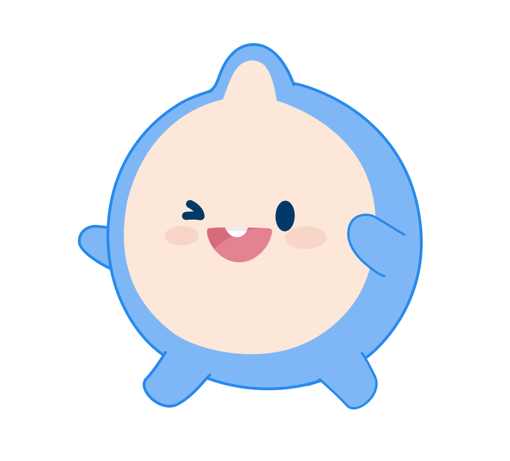

05
TRACK 05 / FAQ
자주 묻는 질문
막히는 지점 대부분은 여기 있어요. 그래도 안 풀리면 Slack #질문-공통으로.

Q. 코딩을 전혀 못하는데 가능한가요?＋
가능합니다. 웹 Claude Code에 한국어로 요청하면 코드를 대신 작성합니다. 이 가이드의 순서대로 따라 하면 됩니다.
Q. 백엔드 서버가 꼭 필요한가요?＋
아닙니다. 브라우저에서 동작하는 웹페이지(index.html) 하나로도 만들 수 있습니다.
Q. 팀원과 함께 작업하려면?＋
GitHub 저장소 Settings → Collaborators에서 팀원을 추가하면 됩니다. 각자 Claude Code에서 같은 저장소에 연결해 작업할 수 있습니다. 최종 소스는 운영팀이 안내하는 구글 폼에 업로드해 제출합니다(GitHub 링크 제출이 아닙니다). 자세한 흐름은
트랙 03 팀 협업을 참고하세요.
Q. 문의는 어디에 하나요?＋
문의 사항별 Slack 채널에 올려주세요. 운영팀이 직접 응대합니다. 정규 응대일은 매주 공지를 확인해 주세요.
Q. Claude Code 계정은 어떻게 받나요?＋
본선 진출 15팀에 운영팀이 이메일로 계정을 발급합니다. 계정 접속에 문제가 있으면 Slack #질문-공통 채널 또는 긴급 시 운영팀에 직접 연락하세요.
Q. AI가 만든 코드를 그대로 제출해도 되나요?＋
됩니다. 이 대회는 AI 활용을 권장합니다. 다만 다른 팀이나 외부 출처의 코드를 그대로 복사하는 것은 표절로 처리됩니다. AI로 생성했더라도 우리 팀의 아이디어와 구성이 담겨 있어야 합니다.
Q. 소스 코드는 어떻게 제출하나요?＋
완성된 소스를 압축(zip)해 운영팀이 안내하는 구글 폼에 업로드합니다. GitHub 저장소 링크 제출이 아니며, node_modules·빌드 산출물은 제외하고 소스만 담으면 됩니다.
Q. 터미널로 개발해도 되나요?＋
됩니다. 이 가이드는 초보자용 웹 인터페이스를 기준으로 하지만, 터미널·IDE로 작업해도 무방합니다. 제출물 4가지 요건만 충족하면 됩니다.
Q. 기획서에 안내된 '기상자료개방포털 대용량 API 서비스'는 반드시 사용해야 하나요?＋
기획서상 안내는 참고 예시이며, 필수 조건은 아닙니다. 콘텐츠 제작에 필요하다면 공공데이터포털, 국가기상위성센터 등 다른 신뢰할 수 있는 공공 기상·기후 데이터도 함께 활용할 수 있습니다.
Q. 대용량 API 서비스 카탈로그 항목이면 모두 활용 가능한가요?＋
기상자료개방포털(기상청 데이터 허브)에서 제공 중인 데이터는 활용 가능합니다. 기상청 API를 활용해 콘텐츠를 개발하는 경우 개발에 필요한 대용량 API 키는 대회 측에서 제공합니다. 다만 카탈로그의 개별 항목이 팀 콘텐츠에 실제로 적용 가능한지, 원하는 방식으로 활용될 수 있는지는 팀에서 직접 확인 후 판단해야 합니다.